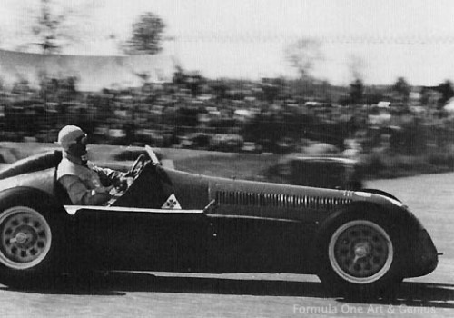
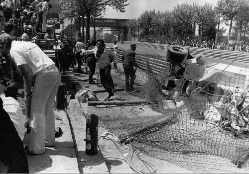

Figyelem! Az oldalon található videók és képek megzavarhatják egyes olvasóink nyugalmát!
A biztonság hiányának következményei
Az autósport történelemkönyvében a siker és a csillogás lapjai mellett megtalálhatók a halálról, vérről
és fájdalomról szóló fejezetek is. A Formula-1-es versenyhétvégéken összesen 25 pilóta vesztette életét,
heten Indy500-as versenyen haltak meg (1950 és 1960 között az Indy500 is beleszámított a
világbajnokságba). Ehhez hozzá kell még adni azt a 14 versenyzőt, akik teszten, vagy nem hivatalos
VB-futamon szenvedtek halálos balesetet. Összesen 49 pilóta hunyt el a Formula-1-gyel párhuzamos
versenysorozatokban. Ezek brutális számok. A 25 pilóta közül 19-en a hetvenes években, vagy azelőtt
vesztettek életüket. A nyolcvanas években mindössze öt halálos kimenetelű baleset következett be. A 21.
században Jules Bianchi (2014
Japán) volt az egyetlen. A Formula-1 biztonsági intézkedései rengeteget fejlődtek az évek során. A
kezdeti időszakban katasztrofálisak voltak a körülmények. Ahogy a lenti képeken is látszik, a pilóták
biztonsági öv hiányában a kormánykerékbe kapaszkodtak a kanyarokban, valamint nagyon kezdetleges
bukósiskot viseltek. 1952 óta kötelező a bukósisak, 1967 óta pedig a biztonsági öv
használata. Ez utóbbit viszont nem mindenki használata megfelelő formában – például Jochen Rindt 1970-ben Monzában
történt balesete esetén.

Egyre gyorsabb autók, halálos balesetek
1958-tól Két világbajnoki címet osztottak ki évente. Egyet a legtöbb pontot szerzett versenyzőnek, egyet
pedig a legeredményesebb csapatnak. Az 1960-as években megjelentek az első reklámok a sportágban,
amikért a csapatok pénzt kaptak, így még többet tudtak költeni az autók fejlesztésére. Innentől minden
csapat arra törekedett, hogy minél gyorsabb autót rakjanak össze. 1967-ig 9 halálos balset történt a
Formula-1 versenyhétvégéin:
- Onofre Marimón, Német Nagydíj, 1954
- Luigi Musso, Francia Nagydíj, 1958
- Peter Collins, Német Nagydíj, 1958
- Stuart Lewis-Evans, Marokkói Nagydíj, 1958
- Chris Bristowm, Belga Nagydíj, 1960
- Alan Stacey, Belga Nagydíj, 1960
- Wolfgang Graf Berghe von Trips, Olasz Nagydíj, 1961
- Carel Godin de Beaufort, Német Nagydíj, 1964
- John Taylor, Német Nagydíj, 1966
Az 1967-es Monacoi nagydíjon Lorenzo Bandini halálos balesetet szenvedett. A 82. körben, a pálya kikötői
részén, az alagút utáni sikánban Lorenzo Bandini autója megcsúszott és egy szalmabálának ütközött. A kocsi
kigyulladt, Lorenzo Bandinit
három percig nem tudták kiszabadítani az égő roncsból. A tragédiát végigkövették a televízió kamerái.
Harmadfokú égési sérüléseket szenvedett, testének 70 százaléka megégett. Lorenzo Bandini három nap
szenvedés után a kórházban meghalt.
Hiányzó biztonsági intézkedések
Az 1968-as hockenheimi Formula-2-es versenyen Jim Clark halálos balesetet szenvedett. Az első rész ötödik körében Jim Clark Lotus 48-asa letért a
pályáról és a fáknak ütközött. A skót nyak- és koponyatörést szenvedett, még a kórházba érkezés előtt
elhunyt. A baleset pontos oka máig sem ismert, legnagyobb valószínűséggel a hátsó kerék defektje
okozhatta a balesetet. Jim Clark
balesete után jöttek rá, hogy az autók egyre jobban fejlődnek, egyre gyorsabbak, ezzel ellentétben a
pályák biztonsági körülményei elavultak, hiszen a legtöbb pályán nem volt bukótér, de még szalagkorlát
sem. Ezután kezdték el a pályák biztonságossá tételét, amivel nagyon lassan haladtak, és
kezdetben több gond is volt, például a túl alacsony, valamint rosszul rögzített szalagkorláttal.


Posztumusz világbajnok
Azt alighanem szinte mindenki tudja, hogy Jochen Rindt a Formula-1 történetének egyetlen posztumusz világbajnoka, aki úgy
is világbajnok lett, hogy a szezon közben sajnálatos módon életét vesztette egy versenybalesetben. A
fájdalmasan fiatalon, 28 évesen elhunyt osztrák versenyzőnek mindössze hat szezon jutott a
Formula-1-ben, amiből az utolsó kettő volt a legsikeresebb. De hogy is alakult az a bizonyos tragikus
1970-es év, amikor posztumusz világbajnoki címet szerzett? Akkoriban egy olyan korszakban versenyeztek a
sztárok, amikor minden versenynek úgy vágtak neki, hogy tudták, lehet, hogy az az utolsó. Az autók már a
hatvanas években is rendkívül gyorsak voltak, viszont ekkor még közel sem volt olyan fejlett a
biztonság, mint manapság. Ebben a veszélyes korszakban is külön "kasztot" képezett a Lotus, ahol Colin Chapman csábítóan
gyors, viszont félelmetesen veszélyes autókat tervezett az istálló versenyzői számára. Ezekben az
autókban senki nem volt biztonságban, a gyönyörű, de rendkívül veszélyes fekete-arany gépek még
világbajnok áldozatot is követeltek Jim Clark személyében. Sorozatban szerzett négy (összesen öt) győzelmének
köszönhetően Jochen Rindt
tetemes előnnyel vezette a világbajnokságot Jack Brabham, Denny Hulme és Jackie Stewart előtt, így Ausztriában (hazai pályán) akár be is biztosíthatta
volna a vb-elsőséget, ám hiába állhatott fel ő a pole-pozícióban, őrjöngő honfitársai legnagyobb
örömére, a versenyt műszaki hiba miatt nem tudta befejezni. Jochen Rindtben ekkor már
sziklaszilárdan megvolt az elhatározás, hogy a vb-cím megszerzése esetén visszavonul. Olaszországban
végül tragikus módon csak az egyik vágya teljesült: az időmérőn a Parabolica felé haladva egyszer csak
elvesztette uralmát autója felett, és menthetetlenül csapódott bele a szalagkorlátba, aminek a végén nem
tudták megmenteni az életét. Hiába akart tehát visszavonulni, a halál gyorsabb volt nála, amitől az
osztrák versenyző karrierje végén már rettenetesen félt. Az Olasz Nagydíjat követően viszont akkora
előnye volt, hogy a szezon végéig halála ellenére sem tudta őt senki utolérni, így is megszerezte a
világbajnoki címet, legalább ez a vágya teljesült. Viszont huszonnyolc évesen egy potenciális többszörös
világbajnokot vesztett el a mezőny.

Tűzesetek a Formula-1-ben
Számos Formula-1-es pilóta lett a lángok áldozata: Stuart Lewis-Evans
1958-ban Marokkóban, Lorenzo
Bandini 1967-ben Monacóban, Jo Schlesser 1968 Franciaországban. Az 1970-es Spanyol nagydíjon Jackie Oliver és Jacky Ickx összeütközött, majd
mindkettejük autója kigyulladt. Ebben a balesetben szerencsére senkinek sem sérült meg komolyabban. Roger Williamson 1973-ban
Zandvoortban vesztette életét. A Formula-1 talán egyik legszomorúbb pillanata lehetett ez a nézők és a
versenyzők számára, ugyanis Roger Williamson autója felborult, majd ezután rögtön kigyulladt. Egyik
versenyzőtársa, David Purley
félreállt, és elkeseredten próbálta visszaborítani az autót. A pálybírók tehetetlenül nézték, tűzálló
felszerelés hiányában nem tudtak az autóhoz érni, valamint a versenyzők közül sem álltak meg mások. Roger Williamson az
autóban vesztette életét. Ronnie
Peterson túlélte az 1978-as tűzesetet, azonban a kórházban elhunyt. A mai Formula-1-es autókban
van automatikus tűzoltóberendezés, ha a pilótafülkében tűz ütne ki. 1975 óta a pilóták tűzálló
overállban versenyeznek.
Az 1973-as silverstone-i baleset
Az 1973-ban rendezett Brit Nagydíj az F1 történetének egyik legnagyobb tömegbalesetéről maradt örökre
emlékezetes, ami egy időre megpecsételte Jody Scheckter megítélését a riválisok szemében. A rajt után a második sorból
induló Jackie Stewart vágott
az élre, megelőzve Ronnie
Petersont, míg a három McLaren egymás nyakán találta magát mögöttük. Jody Scheckter eltökélte,
hogy az első kör végére átugorja mindkét csapattársát, és a célegyenesre kanyarodva támadást indított Denny Hulme ellen. A gyorsabb
dél-afrikai a külső ívre húzódott, ám túl szélesen fordult, lecsúszott a fűre, ahol autója már
irányíthatatlanná vált: a McLaren a pályára visszatörve a bokszutca falába csapódott és keresztben állt
a célegyenesben. Denny Hulme
mellett a közvetlenül mögötte érkező Peter Revson is szerencsés volt, hogy elkerülte a balesetet, az utána érkezők
közül azonban sokan már nem mondhatták el ezt magukról. Miután az első autó nekirohant Jody Scheckternek, a
láncreakció elkerülhetetlen volt, és a McLarennel együtt összesen kilenc modell jutott azonnal a kiesés
sorsára a tömegbalesetben. Az F1 története során második alkalommal a piros zászló is előkerült, noha
csak képletesen, hiszen a célegyenesben sárgákat lengetve állították meg a mezőnyt - a verseny
mindenesetre megszakadt. A kor biztonsági körülményei mellett már az is örömteli volt, hogy senki nem
sérült meg súlyosan, egyedül Andrea de Adamich szerzett bokatörést és ijedtséget is keltett, hogy az olaszt
fél óráig nem tudták kiszabadítani autójából. Sérülése azonban eléggé hátráltatta őt abban, hogy a
későbbiekben már ne is tudjon visszatérni a mezőnybe.


A nézők sem voltak mindig biztonságban
A helyszínre kilátogató nézők ma már biztonságban érezhetik magukat, és a pilóták testi épségére is
sokkal nagyobb figyelmet fordítanak a szervezők. Ez azonban nem volt mindig így: az 1928-as Olasz
Nagydíjon 41 ember vesztette életét, amikor Emilio Materassi autója a közönség soraiba csapódott. 1961-ben Graf Berghe von Trips
balesete 14 ember életét követelte. A valaha volt legsúlyosabb versenybaleset 1955-ben történt, a LeMans
24 órás versenyén. Egy szerencsétlen boxkiállás során, Lance Macklin lassuló autója
a mögötte nagy tempóval érkező Pierre Levegh elé került. A nagy sebességkülönbségű ütközés után Pierre Levegh kocsija a
levegőbe repült, egyenesen a nézőtér felé. Pierre Levegh az ütközés következtében kirepült a Mercedesből és szörnyethalt. A
magnéziumfelépítésű autó azonnal lángra lobbant. A szétroncsolt versenyautó és alkatrészei iszonyatos
tempóval zuhantak a nézők közé, 84 ember vesztette életét és további 100 sérült meg. A pilóták között
nem találtak kizárólagos felelőst, a szakértők a 30 éves pálya felépítését kritizálták, ami
alkalmatlannak bizonyult ilyen gyorsaságú autók versenyeztetéséhez. A Mercedes 1989-ig kivonult a
versenyzésből. Az 1975-ös Spanyol nagydíjon Rolf Stommelen hátsó szárnya eltört, és a szalagkorláthoz közvetlen közel álló
nézők felé csapódott, Rolf
Stommelen súlyosan megsérült, de felépült, viszont 5 néző életét vesztette. A pályák
fejlődésével a nézőket is egyre jobban elkezdték kiszorítani a pályák közvetlen közeléből, megjelentek a
bukóterek, a korlátokat pedig megmagasították, innentől fogva a nézők nem állhattak a
szalagkorlát közvetlen közelében.

Niki Lauda balesete
Niki Lauda 1976-os nürburgringi
balesete egy jó példa a biztonsági intézkedések eredményére. A nürburgringgel kapcsolatban már korábban
is voltak fentartások, hiszen a pálya nagyon hosszú volt és rengeteg helyen elemelkedtek az autók az
aszfaltról. Niki Lauda javasolta,
hogy ne álljanak rajthoz a versenyzők, ám ezt akkori legnagyobb riválisa, James Hunt elvetette, így a
verseny megtartásra került. Niki
Lauda szalagkorlátnak ütközött, aminek következtében autója kigyulladt. A mögötte érkező Brett Lungerrel összeütközött,
aki azonnal a segítségére sietett, ám a ferrarinak más volt a biztonsági öve és nem tudta kikapcsolni.
Szerencsére Arturo Merzario
félreállt, aki korábban tesztelt Ferrarit, így ő ki tudta kapcsolni a biztonsági övet, Brett Lunger pedig ki tudta
húzni Niki Laudat az égő
roncsból. Niki Lauda kórházba
került. Súlyos égési sérülésekkel, a belélegzett gázoktól tüdő-problémákkal élet-halál között lebegett
napokig. Niki Lauda 26.
születésnapjára lepte meg saját magát egy tűzálló overállal 1975-ben, amit 65 000 schillingért
vásárolt. A nürburgringi baleset a ruha gyakorlati értékét mutatta meg, hogy Niki Lauda csak a ruha által nem
védett testfelületen égett meg. Niki
Lauda 5 hét után ismét autóba ült. Niki Lauda balesete miatt helyezték át később a Német Nagydíjat a
Hockenheimringre.

Bernie Ecclestone korszaka és újításai
Nem túlzás azt állítani, hogy Bernie Ecclestone rengeteget tett a biztonság fejlődéséért. 1976-ban Bernie Ecclestone
megvette a világ összes tévés közvetítési jogát 1 millió dollárért. A többi, 9 csapat főnöknek 100.000
dollárért részesedésért cserébe ajánlott jogokat, ám ők nem kértek belőle, hiszen akkoriban ez rengeteg
pénz volt és úgy gondolták inkább tesztelésre, fejlesztésre költik. Ezzel Bernie Ecclestone
egyeduralkodóvá vált, az 1976-os Japán nagydíj óta az ő kezében van az összes közvetítési jog. Az
1976-os Japán nagydíj több szempontból is sorsdöntő volt, ugyanis ezen a versenyen dőlt el a
világbajnoki cím James Hunt és Niki Lauda között. A versenyen
végig esett az eső, konkrétan az egész pályát víz borította, így a látótávolság nagyon rossz volt. Niki Lauda nem vélte
biztonságosnak a helyzetet, és a Formula-1 történetében először önként feladta a versenyt. Ezzel James Hunt lett a világbajnok,
de a nagy áttörés mégis Niki
Lauda nevéhez köthető, hiszen rájöttek arra, hogy ha a legnagyobb hírnévvel bíró pilóták nem
hajlandóak versenyezni, akkor nem lesz többé jövője a Formula-1-nek. A televiziós közvetítések is
fontosak voltak, hiszen senki sem akarta látni, ahogy a kedvenc pilótája életét veszti egy versenyen. Bernie Ecclestone
belátta, hogy cselekedni kell. Bernie Ecclestone tovább folytatta a pályák biztonságossá tételét, a
bukóterek egyre több helyen jelentek meg, a szalagkorlátok elé pedig gumifalak
kerültek, amelyek segítik elnyelni az ütközések erejét.
Dr. Sid Watkins - A Formula-1 első, hivatalos orvosa
1978-tól Bernie Ecclestone
kinevezte Dr. Sid Watkinst a
Formula-1 első hivatalos orvosának. Kezdetben elég nehezen fogadták Dr. Sid Watkinst, hiszen minden
csapatnak megvolt a saját orvosa és nem akarták, hogy parancsolgassanak nekik. Bernie Ecclestone nagyon
ragaszkodott Dr. Sid Watkinshoz,
ezt nagyon jól bizonyítja az 1978-as német nagydíj. A rajt előtt pár perccel a szervezők leküldték Dr. Sid Watkinst a pályáról, Bernie Ecclestone válasza
csak ennyi volt: „Pakoljunk, hiszen itt ma nem lesz verseny.” A szervezők a több mint 80.000 nézőre
hivatkoztak, Bernie
Ecclestone azt mondta, küldjék haza őket. Pár perc múlva jött a válasz, hogy természetesen Dr. Sid Watkins maradhat, és
elstartolt a verseny. Egy másik, ennél sokkal szomorúbb történet az 1978-as monzai nagydíj. Ronnie Peterson az első
körben balesetet szenvedett, és eltört mindkét lába. Dr. Sid Watkinst 20 percig nem engedték oda, Ronnie Petersont
mentőhelikopterrel szállították kórházba, ám masnap embóliában meghalt. Ha Dr. Sid Watkinst oda engedték
volna, akkor Ronnie Peterson
túlélte volna a balesetet. Ettől a versenytől fogva Dr. Sid Watkins az első kört (ami a legveszélyesebbnek számít) autóban
követte, hogy, ha kell a segítség, akkor azonnal odaérjen. Ez egyébként a mai napig így van a
Formula-1-ben. Dr. Sid
Watkins egységesítette a Formula-1 orvosi felszerelését, 1978 óta létezik állandó
elsősegély-szolgálat, 1980 óta üzemelnek a pályakórházak, 1986 óta van mentőhelikopter minden
versenypályán a tesztek és a verseny ideje alatt.
A Formula-1 fekete hétvégéjé
Az 1994-es San Marinó-i Nagydíj hétvégéjén több súlyos baleset is történt, és két versenyző, Roland Ratzenberger és
Ayrton Senna el is hunyt a
sérüléseik következtében. Az autóversenyzés történetének egyik tragikus fejezetét írták az 1994-es San
Marinó-i Nagydíj napjai során, amit azóta gyakran csak fekete hétvégeként emlegetnek. Pénteken az első
időmérő edzésen Rubens
Barrichello repült ki a pályáról, és szenvedett életveszélyes sérüléseket, szombaton Roland Ratzenberger
elhunyt balesetének következményei miatt. Roland Ratzenbergernek ez volt az első és egyben utolsó versenyhétvégéje,
amelyben autóban ült. A hétvége történetéhez kapcsolódik, hogy Roland Ratzenberger
balesete után az orvosok nem állapították meg a helyszínen a pilóta egyértelmű halálát, mert akkor a
futamot az olasz törvények miatt nem lett volna szabad megrendezni. Vasárnap J. J. Lehto állva maradt a
rajtnál, a mögötte érkező Pedro
Lamy az autójába csapódott, és a leszakadó törmelékek kilenc nézőt könnyebben megsebesítettek. A
Safety Car periódus után nem sokkal az élen haladó Ayrton Senna kivágódott, a betonfalnak ütközött, és az életét már nem tudták
megmenteni. Közben egy elszabadult kerék több szerelőt is megsebesített a bokszban. Mai szemmel meglepő,
hogy az ominózus rajtbaleset után nem állították le a versenyt, sőt akkoriban még az sem volt divat,
hogy a részben eltorlaszolt célegyenes helyett a bokszutcán vezesse végig a Safety Car a mezőnyt. A BBC
legendás kommentátora, Murray
Walker aznap azt mondta, ez volt „a legsötétebb nap az autósport történetében, amire emlékszem”.
Leszakadó gumiabroncsok
A leszakadó gumiabroncsok rengeteg balesetet, sokszor nézők, pályabírók életét követelték. Bár az F1-ben
már 1999-ben bevezették a kerekek leszakadását elvileg meggátló rögzítőláncok alkalmazását, ezek
működése nem volt tökéletes, jó néhányszor röpködtek az abroncsok. A Formula-1-ben szigorították a
kerekek rögzítésére vonatkozó előírásokat, miután a Nemzetközi Automobil Szövetség (FIA) elvégezte a
2013-as Német nagydíjon történt baleset hátterének részletes elemzését. A nürburgringi bokszutcában egy
operatőr bordatörést szenvedett, amikor a Mark
Webber Red Bulljáról lerepülő kerék hátulról eltalálta. Az FIA azonnal korlátozásokat
vezetett be arra vonatkozóan, hogy mikor kik tartózkodhatnak a bokszutcában. A vizsgálat során
fényt derítettek a baleset körülményeire is, és rájöttek, hogy miért szabadult el a kerék. Bár azokat
régóta egy speciális kábellel rögzítik az autóhoz, hogy ilyesmi ne fordulhasson elő, kiderült, hogy ez a
megoldás csak akkor működik megbízhatóan, ha a kereket már biztonságosan felhelyezték a tengelyre.
Amennyiben ez még nem történt meg - például beszakadt a menet, vagy az autó túl korán indult el -, a
lötyögő kerék a kábel ellenére is lerázódhat. Ezért az FIA új, kétkábeles rendszer használatát
tette kötelezővé a csapatok számára. Az első kábel akkor biztosítja a kereket, ha azt az anyával
megfelelően rögzítették, a második pedig akkor, ha az már a tengelyen van, de még nincs teljesen a
helyén. A képen jól látható, hogy a kerék súlyosan roncsolódott, ám az ütközés ellenére is az autón
maradt. Ezzel az intézkedéssel jelentősen növelték a biztonságot.
A verseny közbeni tankolás és veszélyei
A versenyek közben történő tankolást a sportág történetének több időszakában is engedélyezték. Amikor
legutóbb ezt lehetővé tették, az rendkívül ellentmondásosra sikerült. 1994-ben majdnem minden csapat
ellenezte az ötletet. A Ferrari egyedül támogatta a kezdeményezést, ők ugyanis úgy vélték, hogy a V12-es
motorból így tudják majd a legtöbbet kihozni. Az ígéretek szerint a berendezés nem szivároghat, ezáltal
nem lesznek tűzesetek a boxutcában. Az élet hamar megcáfolta ezt: az 1994-es Német Nagydíjon Jos Verstappen Benettonja
lángra kapott, az esetben a holland pilóta és a szerelők egy része is megsérült. 2009-ben törölték el
a futam közbeni tankolást a Formula-1-ben a 2007-2008-2009-ben történt bokszutcai esetek miatt,
valamint költségcsökkentési okokból. a tűzveszély addig folyamatosan fennállt. A tankolás egy érdekes
színfoltja volt a futamoknak. Stratégiai fegyverként is használták, valamint történtek helycserék is a
kiállások során. Tény, hogy például a 2008-as Szingapúri Nagydíjon történtek nem voltak éppen
megnyugtatók (Felipe Massa
autóján rajta maradt a cső). Ugyanezen a futamon szenvedtek a legtöbbet az akkori szabályok miatt is,
mely szerint a boxutcát bezárják, ha a biztonsági autó a pályára hajt. Számtalan büntetést osztottak ki
amiatt, hogy a versenyzőknek muszáj volt kimenniük tankolni, hiszen egyébként megállt volna alattuk az
autó.
A halo bevezetése
A 2010-es évekre a biztonság szinte teljesen kifejlődött, rengeteg változtatás történt a sportág kezdete
óta. Egy dolog azonban még visszavolt: A pilóták feje egészen 2018-ig védtelen volt, ám ekkor egy
halálos balaset hatására minden megváltozott. Korábban is történtek balasetek, ahol egy esetleges
védőszerkezet megakadályozhatta volna a baleseteket. Gondoljunk csak Felipe Massa 2009-es
magyarországi balasetére, amikor egy másik autóról lepattanó rugó eltalálta Felipe Massa sisakját, aki
eszméletét vesztette és gumifalba csapódott. Hosszú idők óta ment a vita, miszerint a pilótafülkéknek
zártnak kellene lenniük. Ez az ötlet azonabn súlyos ellenállásba ütközött, hiszen egy teljesen zárt
fülkéből egy esetleges baleset során nagyon nehéz lenne kiszállni. Justin Wilson a pennsylvaniai
Pocono Racewayen megtartott 2015-ös indyCar versenyen szenvedett rendkívül balszerencsés balesetet. Sage Karam az autójával a falnak
csapódott, kocsijának orra letört, és a mögötte haladó Justin Wilson fejének
csapódott, aminek következtében eszméletét vesztette, később pedig elhunyt. Ekkor kezdtek igazán
gondolkodni egy alternatív megoldáson, ami végül is a Halo vagy ismertebb nevén Glória lett. A
Halot 2018-ban vezették be a Formula-1-ben, annak érdekében, hogy a pilóták fejét megvédje. A fejvédő –
gyenge esztétikai minősége miatt – igencsak megosztotta a Formula-1 világát: sokan úgy gondolták, a
sport ezzel az elemmel elveszíti varázsát, és aki itt versenyez, vállalja, hogy a motorsport veszélyes.
Mások szerint, ha lehetőségük van rá, igenis fejleszteniük kell a biztonságot, hiszen lehet, hogy ezzel
életeket menthetnek, és a legfontosabb a versenyzők épsége.
Életet mentett a Halo
A 2018-as Belga Nagydíjon, közvetlenül a rajt után Charles Leclerc és Fernando Alonso keveredett incidensbe, amikor a spanyol pilóta autója átrepült a
Sauber felett, érintve a fejvédő szerkezetet. Hogy pontosan mi történt volna, ha nincs az autón a Halo,
azt az FIA kezdte vizsgálni, és hosszú hónapok után, felfedték a kutatás eredményét, amely alapján
kiderült: nem kétség, a Halo bizonyított. Az esetet követően rengeteg pozitív nyilatkozat érkezett a
Halóval kapcsolatban – sokan a korábbi kétkedők közül is azt mondták, bizonyított a fejvédő rendszer,
nincs többé kérdés vele kapcsolatban. A vizsgálat eredményeként kiderült, a Halo megmentette Charles Leclerc-et egy súlyos – vagy annál is komolyabb – sérüléstől. Az
elemzésből kiderült, hogy Fernando Alonso kereke nem, azonban az első vezetőszárnyának véglapja elérte
volna a monacói sisakrostélyát a Halo nélkül, így akár át is törhette volna azt. A nyitott
pilótafülkés FIA-szériákban, ahol idén még nem láthattuk a Halót – vagyis a Formula-3-ban és a
Formula-E-ben is – bevezetik 2019-ben a már abszolút pozitívumnak számító fejvédőt.

A mai pilóták ezeknek az intézkedéseknek a hátására már a lehető legnagyobb biztonságban érezhetik
magukat. Rengeteg baleset történt azóta, amelyek régen halálos kimenetelű balasetnek számítottak volna,
azonban szerencsére túléltek a versenyzők. A Formula-1-ben azóta is elsődleges szerepet játszik a
biztonság, hiszen már eddig is nagyon sokan vesztették életüket az autósportban. A kockázat továbbra is
fennáll és ezt a pilóták is tudják.